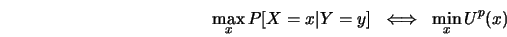
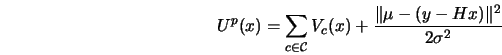
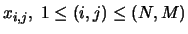
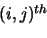
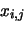
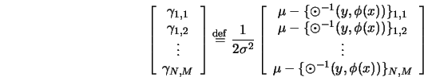
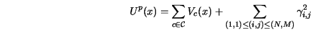
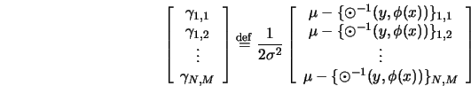
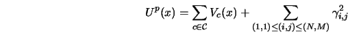

In order to determine the neighborhood for the posterior
distribution we consider the conditional
probability of a pixel
,
given all the remaining pixels
 and
, and the observed image  .
.
Define the vector
|  | (11) |
|  | (12) |
 be denoted
by , which we also assume to be translationally
invariant. Note that this neighborhood will, in
general, be different from  the neighborhood for
the MRF model.
be denoted
by , which we also assume to be translationally
invariant. Note that this neighborhood will, in
general, be different from  the neighborhood for
the MRF model.
Keeping in mind that we are interested in finding the
neighborhood for the conditional probability distribution of
the pixel given all other pixels and the
observation , we now decompose  as follows.
as follows.
Clearly the posterior neighborhood structure corresponding to site
is determined by the the sites involved in the above
expression, namely
which shows that the posterior distribution also has local dependencies and consequently
Thus a typical conditional problem is
Find a configurationsuch that
is maximized, equivalently
(2.17) is minimized.
Though the above is in the context of image
restoration, it generalizes to
estimating early vision attributes by incorporating extra
fields besides  , and appropriately modifying the
potential function
, and appropriately modifying the
potential function  .
.